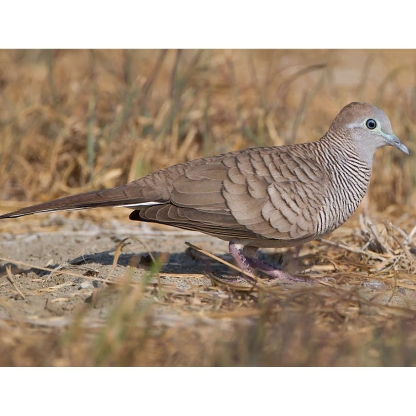
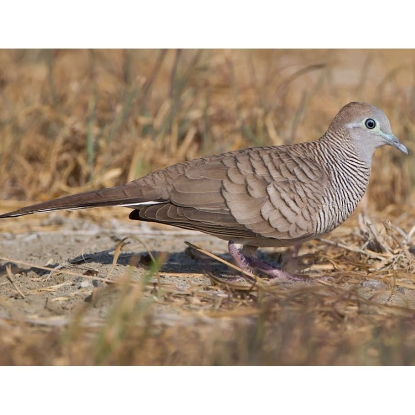

Perkutut Jawa Suara Emas Penghibur Hati
Jikalau mendengarkan burung perkutut menyanyi di pohon ditiup angin yang sepoi-sepoi bukan lagi aku mendengarkan burung perkutut. Aku mendengarkan Indonesia
~Soekarno Presiden RI~
Burung Perkutut Jawa dengan nama latin Geopelia Striata bukan hanya burung yang mampu bersuara, akan tetapi burung ini mempunyai beragam keunikan yang tidak dimiliki oleh burung lainnya. Bagi sebagian pemelihara burung, dengan hanya melihat perkutut, sudah bisa memastikan suara yang akan dihasilkan. Salah satu kebiasaan dari burung ini adalah terbang dan bertengger di kebun atau ladang. Selain itu, mereka juga sering mencari makan di jalan yang jarang dilintasi oleh manusia.
Perkutut Jawa hidup berpasangan atau kelompok kecil. Perkutut Jawa makan di permukaan tanah. Kadang mereka berkumpul untuk minum di sumber air. Sarangnya berbentuk datar tipis dan terbuat dari ranting-ranting. Telur berwarna putih, jumoah 2 butir. Perkutut Jawa berbiak pada bulan Januari-September
Profil Perkutut Jawa
- Burung Perkutut Jawa (Geopelia Striata) atau dikenal juga sebagai perkutut lokal mempunyai tubuh ramping panjang berukuran sedang, sekitar 20-25 cm, ukuran ekor pendek dengan kepala membulat
- Burung pemakan biji-bijian ini biasanya dipelihara oleh orang jawa yang mempunyai sebagai burung kicauan karena suaranya yang khas dan dianggap membawa keberuntungan
- Burung dengan nama latin Geopelia Striata bukan hanya burung yang mampu bersuara, akan tetapi burung ini mempunyai beragam keunikan yang tidak dimiliki oleh burung-burung lainnya
- Burung perkutut di alam memakan rerumputan, benih gulma dan serangga. Sehingga, dimungkinkan di alam mempunyai manfaat sebagai pengontrol alami gulma dan serangga
Cara Berternak Perkutut Jawa
Pemilihan Bibit
Bibit atau indukan burung perkutut yabg akan dibudidayakan haruslah telah berumur ideal yaitu minimal berumur 4 bulan dan sebaiknya lebih tua dari jantan selain itu pilihlah bibit yang baik agar hasilnya juga baik, berikut ciri-ciri indukan burung perkutut yang baikPersiapkan Kandang budidaya
Kandang yang digunakan untuk budidaya biasanya adalah kandang dengan ukuran tinggi bervariasi antara 45-180cm, lebar 60cm, panjang antara 100-180cm, lantainya terbuat dari pasir atau tanah dan atapnya berupa asbes atau gentingproses Penjodohan
Untuk menjodohkan burung perkutut ini, pertama masukkan perkutut yang akan dijodohkan ke dalam kandang ternak pada saat sore hari. Namun perlu diperhatikan sebelum dimasukkan ke dalam kandang ternak kedua perkutut yang akan dijodohkan terlebih dahulu diberikan kacang hijau lunak, minyuak ikan, vitamin E dan badannya dibasahi sedikitTahap Pemeliharaan Anakan
Priyik atau burung yang baru menetas, sebaiknya dipisahkan terlebih dahulu dari induknya jika sudah berumur 1-1,5 bulan. Pada usia tersebut, priyik biasanya sudah bisa makan sendiri. Tempatkan priyik dalam sangkar yang memiliki ukuran sekitar 50cm x70 cm x 50cm dengan dalam satu sangkar diletakkan 8 sampai 10 ekor priyik burung tersebut


 
